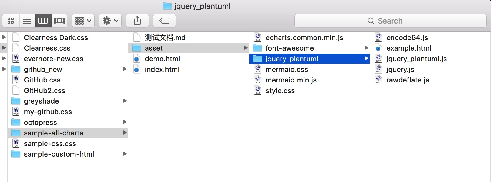
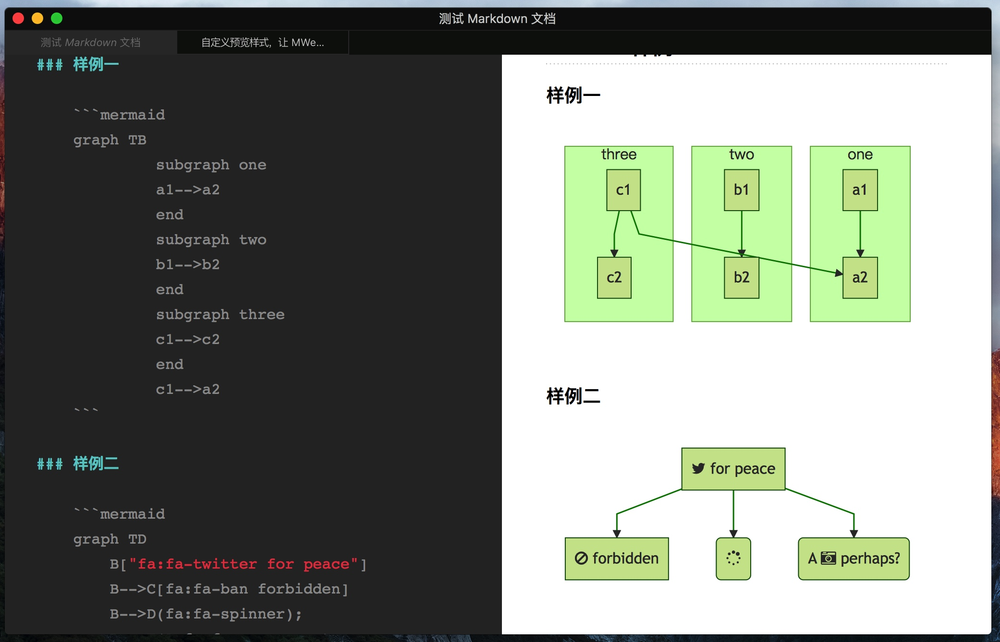
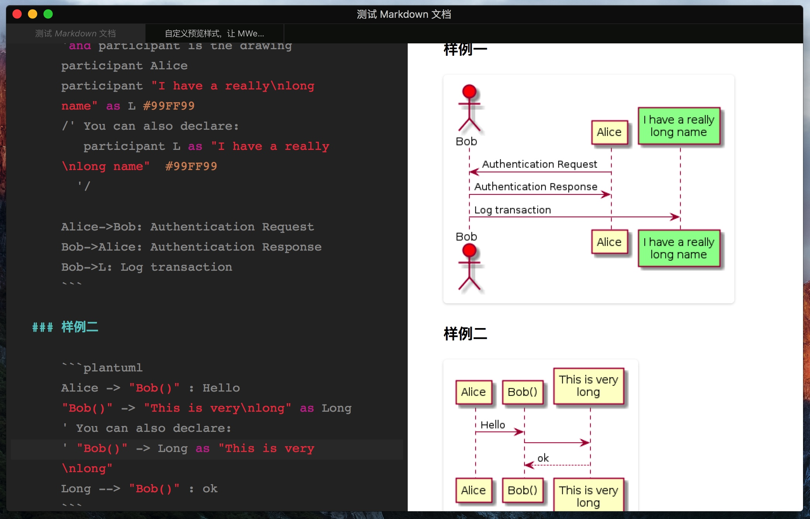
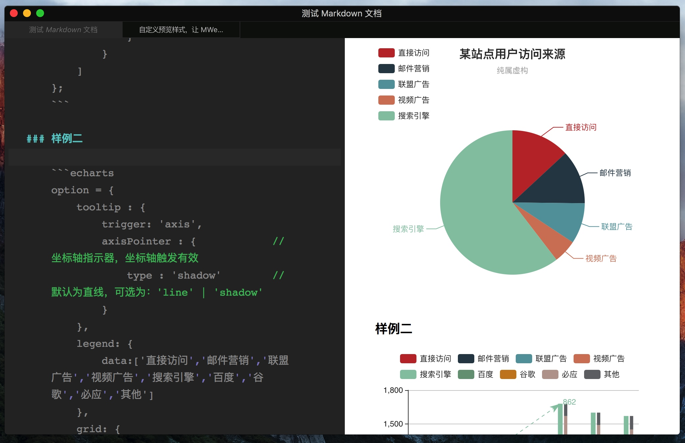

之前 MWeb 2.0 说要支持 PlantUML，后来又否定了，因为我发现大部分朋友只需要自定义预览样式就可以做到的这种 PlantUML 支持，而早在 MWeb 1.2 版都支持了自我增加这功能了，介绍文章为：自定预览 CSS。2.0 中的自定预览功能有所变化，这也是今天要介绍的内容。
今天要说的是一步到位，做一个支持 ECharts、mermaid、PlantUML 这三个常用的画图库的预览样式。如果你不想看到制作方法，只想使用，可以直接下载 (>>点此下载<<) 这个预览样式（如果你的主题中已有名称为 sample-custom-html-charts 的样式，可以直接用这个，不用下载了），解压后，把整个文件夹复制到 MWeb 的预览样式所在文件夹，然后点一下刷新按钮即可。 你可以在 偏好设置 - 主题&样式 中点一下 预览样式 右边的编辑按钮来打开预览样式所以文件夹。这个预览样式中还包含了一个测试的 Markdown 文档，用 MWeb 打开这个文档，然后选择这个预览样式并预览就可以看到效果。
在 MWeb 中自定义预览样式有两种方法，一种是简单地使用一个 CSS 样式文件即可，另一种是使用一个文件夹。MWeb 默认提供了两种方法的样例，就是预览样式中名为 sample-css 和 sample-custom-html 这两个样式。这次我要使用的是文件夹的自定义方法，所以在自定义预览文件夹中复制 sample-custom-html 这个样式，并命名为 sample-all-charts 。
sample-all-charts 里有一个名为 asset 的文件夹，这个文件夹是放自定义预览样式所用 js、图片、css 等资源文件，还有两个 html 文件，一个名为 index.html，是 MWeb 自定义样式的模板 html，另一个为 demo.html 是制作预览样式时预览用的，并非必须的。
先分别下载这三个 JS 画图库，下载地址分别为：http://echarts.baidu.com/download.html、 http://knsv.github.io/mermaid/、 http://zh.plantuml.com/download.html 中选择下载的是 JQuery integration，另外还有 mermaid 要用到的 font-awesome。然后把相关文件放到 sample-all-charts 中的 asset 文件夹内，样式我直接是用 sample-css.css 这个样式，并改名为 style.css ，完成后整个文件夹如下图：

注意： jquery_plantuml 中的 encode64.js 是我从 jquery_plantuml.js 中提取的部分，由于 MWeb 的预览是本地预览，而 jquery_plantuml.js 中用到了 Worker，本地是不支持的，所以我就用了另外的写法。在 MWeb 中用边写边预览的方式用这个主题时，如果图表量很大的话，可能会比较卡。这里说一下 MWeb 2.0 的一个小功能，因为代码高亮比较费性能，所以如果用边写边预览的模式时，文档中有大量代码码，打字感觉到卡时，这时可以用菜单：视图 - 实时预览时关闭代码高亮，这样就不会卡了。
原理就是使用 Github-flavored Markdown 支持的代码块功能。因为代码块功能可以标记语言类型，并生成 <pre><code class="language-语言类型"></code></pre> 这两个定制能力非常强大的 HTML 标记。这使得可以用 JS 在生成的 HTML 中获取所有代码块，并准确识别出语言类型，还可以取得原来的代码内容。我们只要用 JS 隐藏掉或者移除掉原来的代码块，并用代码内容生成需要的图形即可。
详细的代码在 index.html 这个文件里，感兴趣可以下载来看看，这里只简单说一下 index.html 这个文档里的一些比较重要的字符串。
index.html 中有三个比较重要的字符串，这三个字符串是自定义样式必须要有的，它们是 {{title}}、{{head}} 和 {{content}}。{{title}} 是导出为 HTML 功能会用到的，会正确替换标题；{{head}} 是 MWeb 内置的代码高亮、LaTeX 渲染等用到的；{{content}} 是为 Markdown 输出的 HTML 内容。
最后再放一次这次自定义的预览样式下载：(>>点此下载<<)
7/20 Update：经 @chang 提醒，PlantUML 改成 SVG 样式，这样对中文支持更好。
7/21 Update：经 @FTD_Liaoer 提醒，ECharts 在导出 PDF 和生成图片时会有问题。这个问题可以在 option 中加 animation:false 解决，大概为：
option = {
animation:false,
title : {
....
}
8/25 Update：由于 MWeb 2.0.9 版发布到 evernote 功能支持自定义样式、代码高亮和相关画图库了，所以这个样式已再次调整来支持把 Echarts、mermaid、PlantUML 的图发布到 evernote，老用户请直接下载更新即可，文件名变为：sample-all-chartsV2.zip。主要改动为把用 <link xx> 方式引用的样式改为 <style> 方式，要注意的是，mermaid 发布到 evernote 时并不支持 font-awesome。


